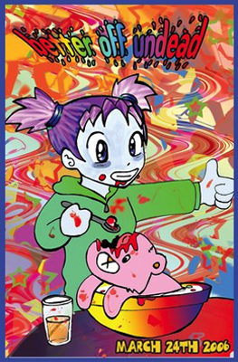

1000 DAYS OF THEORY
The Passion of the Social
Reflections on the Seattle Rave Killings
Andrew Wernick
At 7am on the morning of March 25th , of this year, Aaron Kyle Huff walked back to the house in the Capitol Hill area of Seattle, where he had
shortly before been "sharing a bowl" at a rave after-party.[1] He spray-painted NOW three times on the
pavement, and shot two partygoers on the porch. He had a pistol-grip shotgun, a Ruger semiautomatic, and several clips of bullets (more than 300
rounds in all) which he had retrieved from his pick-up parked round the corner. More weapons were in the truck, including a base-ball bat and machete.
He entered the house, shooting whomever he found, then reloaded and went back outside. Before he could continue, a cop who had been cruising the area
and was called to the scene by cell-phone, blocked Kyle's way to the street. Told to drop his weapon, Kyle put the gun to his mouth and pulled the
trigger.
Seven dead was a local record, at least for a single shooter, and the most for a single incident since the gang slaying at the Wah Mee gambling
club in 1983. The casualties -- including two women in mid teens -- were shockingly young. But rampages by unhinged individuals have become a
background drone in the mediascape, and, on the scale of Columbine or Hungerford, not to mention 9/11 and the daily mayhem in Iraq, this was
relatively minor. What lifted the story, briefly, out of run-of-the mill spree killings was the rave angle, particularly when it emerged that the
dance party was themed as a zombie night, with reduced admission for those in costume, and the overall title "better undead."

Better off Undead. Rave flyer, Artist unknown, 2006.
Was the rave to blame? Had the Goth and fright-attired crowd drawn to the party that night itself bred the monster? The vultures of order hovered.
But the causal link proved tenuous. Kyle was not a regular member of the scene, nor of any scene. Now in his late twenties, he had moved to Seattle
with his twin brother Kane five year before from north west Montana. Kane enrolled in art school, Kyle delivered pizzas, both aspiring heavy metal
drummers who practiced, alone, and never late, in the apartment they shared. They were loners together. Kyle had enquired on line about how to go to
raves only two weeks before. That he was invited to the after-party was happenstance, just a friendly gesture to a shy and polite stranger. To be
sure, this gesture was itself an instance of the PLUR (peace love unity respect) values of the subculture, and essential to its texture. But Kyle was
unassimilable, a heterogeneous element. His counter-gift proved it. In any case, the massacre did not happen at the rave itself. Nor could it have,
given the security arrangements, which included a ban on alcohol, drugs and firearms, a search at the door, and seventeen uniformed police.
All this was a great relief -- not least for the municipal politicians who had backed the "all ages dance" ordinance under which the raves at
Capitol Hill were being held, and for the policy more generally of providing a controlled outlet for alternate youth culture. The policy was even
vindicated. Public space had been kept safe. Imagine if the shooter had been at an unsupervised event, as in the bad old days of the early 90s, when
raves in Seattle were underground self-organised affairs. As for the devastated ravers, they could at least take comfort from the fact that the killer
was not one of "us." That this was officially recognized also mitigated the stigma. After the rituals of mourning (including a vigil, a church
memorial, and a dj evening to raise money for the families), the wound could be allowed to heal, and normal operations at the Capitol Hill Arts Centre
could resume.
Not that everything could be quite the same. Besides the damage to lives, there was damage at the level of the group. The rave milieu's
self-defining ethic of indifferent inclusionism had suffered a blow. As too had the informal institution of a free social space between (the policed
zone of the) public and (the idiotised zone of the) private. Both this ethic and this space, remnant carriers of a utopian impulse, could only retreat
further in the face of enhanced risk. There also remained the puzzle of Kyle Huff's unprovoked explosion. Unlike mass killings, say, within a family
or workplace, the motive of revenge seemed absent. Nor was the act preceded by a build up of escalating conflict. Why had Kyle targeted the rave at
all?
Here too, though, abstraction could allay anxiety. The fact that the killing was not at the main site of the rave, and that the killer had no
apparent connection with his victims, not only alleviated responsibility for the evil in our midst. It dissipated the enigma of its appearance by
shunting the question mark hanging over the event onto questions of individual psychology on the one hand, and blind chance on the other. What
happened at the after-party was like being hit by a truck; it could happen on any street. Such abstraction of course, which makes absolute the split
between inside and outside, is never innocent. Besides moral effects, it renders unintelligible the weave of forces that produces the event. Here it
does more. By sundering what, for an instant, had been so violently thrown together -- Kyle Huff plays Zombie Night -- the act, as the achievement
precisely of a symbol (sym-bolein = throw together), is itself drained of meaning.
* * *
We cannot know the impulse that led Kyle to select, from the arsenal at his disposal, the guns he used. The Winchester and Ruger came with him to
Seattle. Perhaps they were his favourites. Be that as it may, as a signalling device, drawing attention to the continuity between one scene and
another, it was a happy choice.
The same guns had figured once before in a transgressive act.[2] This was in Whitefish Montana, a
declining rail and logging hub, touristically revived around hunting and skiing, where Kyle's mother, after divorcing his Vietnam vet father, had
brought up the twins, and ran an art store. Kyle, three years out from high school, had gone on a night-time jaunt with buddies. In the course of it
he had shot up a joke-decorated fiberglass moose, called Daphney. The moose -- whose counterparts up and down North America have become a
cliché of downtown boosterism -- was one of a number dotted around Whitefish, as part of a charity drive by local artists.
It is easy, in retrospect, to see in the moose incident a warning. There was something excessive in the twenty two bullets Kyle pumped into
Daphney. A real animal would only have needed one or two. Moreover, if the moose was a tacky postmodern promotional sign -- almost inviting the
prankster to deface it -- it was also a gift by its maker, an emblem for the local arts community, and, in its way, a metonym for "art" itself. There
are circles of aggression here. In the instance, the Moose's creator generously costed his material damage low enough (under a thousand dollars) for
Kyle to avoid a felony charge, and he escaped with a fine and community service, plus restitution and an apology. After the debts were paid, the court
called it quits and the police returned his guns.
Kyle's letter of apology said it "was not a personal attack and was not intended to bring you or your family any kind of stress."[3] No doubt this was so. The wrong done to the moose-maker was collateral damage. Which is not to say that
personal investments were absent. How could they be, considering that his mother was herself a local artist, that her sons had gravitated to the music
and drama crowd, and that besides his drums Kyle was himself considered to have some talent at pottery? Shooting the "moose" -- guns against art --
pitted the way of the father against the way of the mother, with all the identificatory ambivalence that such a collision implied.
This ambivalence is evident not only in the private meaning of what broke through. It is evident in the relation of the act to the public meaning
of what it negated. What fuelled the fury in Kyle's attack on art and on being an artist (let us surmise) was a repudiation of identification with his
mother as a position which might open him to the homoerotic desire that had to be repressed for the sake of being, and passing as, a man in a
homophobic, hunting country, small town high school. Yet it came from one who was, by background and inclination, in the orbit of that same
arts-oriented identity.
If, then, shooting the "moose" meant death to art, and to the locals who cared about it, this was not the act of an outsider, but of an
insider-outsider, or outsider-insider. Nor was the act entirely outside the practice of art itself. Performing the death of art through gestures that
nihilate the fetishised art-object has a century of aesthetic history behind it. Of course, to destroy an artifact that is already, in self-parody,
counter-signed by the same idea, and to do so physically, is as superfluous as it is crude. But it is still a move in the game, still a kind of
anti-art as art. Considered as such, indeed, the "moose" shooting is not without wit. Nor without content. In its condensed allegory of sacrificial
substitution -- from moose to "moose" -- it even touches on a universal theme. All that is missing for this borderline behaviour to be read as a
neo-Dadaist happening is the frame. And even the absence of this tallies with the old surrealist phantasm of erasing the line between art and life, as
in Breton's image of the artist randomly shooting passers by as he dashes down the street.[4]
* * *
In Kyle's second acting out we can see many of the same features. Once more -- from a position both inside and outside it -- an attack on (what can
loosely be called) the art community via a spoliation of its emblems. Once more, a scene covered over with parodic signs, in which, again, the use of
guns has the effect of both destroying those signs and making them come alive. See this fake moose, I'll shoot it with real bullets. You wanna play
with scary images, I'll be your worse nightmare.
The themes, though, had matured, and the aggression had transmuted into something at once more anonymous and direct. There was, too, was a change
in medium. The attack, though still on a totem (the rave and its insignia), was not on a representative artifact related only at a distance to those
it represented. It was on a collective performance, from which the community it ritually brought together could not be separated. The attack was
focused squarely, indeed, on the human milieu. And the aim was total: to wipe out a whole world, or as many in the community targeted as possible.
"There's plenty of caps for all" Kyle was heard to shout as he shot his way through the house.
There was a shift also with regard to who came under attack. The rage displaced on to the "moose" connected to the arts and crafts oriented
ex-hippies of his parents' generation. The scene disfigured in Kyle's second assault came out of the artsie alt.culture of his own contemporaries.
This was tantamount to a wipeout of peers. The hostility in that context was both poignant and perverse. Alienated among the alienated, marginal among
the marginal, Kyle's was not an attack on power, nor on the conformism of the mainstream, but on the alternative sub-community of those trying to swim
against it. His farewell was an attempt to obliterate the one grouping that welcomed him in and to which he might have belonged. To that extent,
moreover, it was vicariously, as well as actually, suicidal. The "all" for whom Kyle had enough bullets included "me." That Kyle had to die with his
victims was not only, then, the blood-price demanded by blood. It expressed the coincidence of his virtual belonging to the "them" he killed with the
impossibility of any mediating "us."
None of which is to say that the act was not a performance with its own supplement of meaning. As with the "moose," but still more clearly, Kyle
did more than trash the show. He staged a play within a play, a détournement that with black humor subverted the larger performance
going on. That the outrage had to be deferred till the after-party was not, from that angle, a defect. The after-party was scripted to be the rave's
final act. The whole could be ruined backwards from there.
The effect was vertiginous. There was an element of déjà vu even as the script was being torn up. The movie that the event suddenly
seemed to replicate -- in which teens, trifling with a horror they don't believe in, get their comeuppance -- is one we have seen many times before.
Exposing oneself, via such images, to the terrors under the bed, and to the lacerated flesh that polite society hides, is a rite of passage negotiated
these days in childhood. By adolescence it has become camp entertainment. In just that spirit, in fact, many such movies were played that night in the
movie room attached to the rave, as an adjunct to its faux-ghoulish theme. The twist, though, was the whole event was made to replay in the register
of actuality the knowingly ironic horror movies that were part of its constructed mise en scène. And the same effect -- a funhouse hall
of mirrors in which the simulacrum becomes flesh -- extended to the signage of the whole event. Amidst the zombie-styled music, costume, and
décor a real zombie awakened to destroy the undead.
As a sardonic joke, Kyle's literalisation of the image is no doubt crass. A sub-cultural purist would say that it bypasses both the meaning and the
stakes of the post-punk, re-revived, gothic imagery borrowed from at the rave. In so far as it is more than playing with quotes, the flaunting of
morbidity and abjection (at the rave, the different dance rooms were designated dungeon, torture etc) is not just being clever-shocking. Still less is
it conjuring evil (though strange things seem to be going on in Germany and East Europe.) It is an aesthetic gesture -- revolt into style -- that
converts the suppressed material it playfully/contestatively brings to the surface into what is at once a badge of identity and a vehicle for
self-expression. The tone is deadpan, a blend of down-beat vulnerability and satirical distance. The white face in the bat-cave says I am wounded, but
strong enough to mirror back that woundedness through this exaggerated assemblage of signs as a way to make visible the greater darkness that is all
around. Are we not all zombies?
But what might be culturally authentic scarcely matters. The rave theme was broadly cast and, as with its pot-pourri of music sub-genres, blurred
all manner of fine distinctions. It was, after all, a costume party. In any case, the catastrophic desublimation of what haunts the goth (and
alternate youth cultural) imaginary is not the only joke. The mainstreamed insignia of death, evil and despair have become empty signifiers. Here, in
fact, trebly: not just via the natural entropy that deadens the power of symbols (let us call this the Durkheim effect), or via the
de-referentialising effect of fashion and general exchange (the Baudrillard effect), but through the conscious artificiality at work in the organizing
of the Capitol Hill dances. The very emphasis on costumes and themes, the edgier the better, was a piece of social engineering, designed to provide a
compensatory frisson within the controlled outlet provided for the always potentially troublesome energies of urban youth.
Kyle, not in costume, not dancing, a fly on the wall, a blank without meaning until he picked up his guns, was a perfect complement to this mass of
dead metaphor. As the event wound down, at the start of a new day, what more fitting than that he should supply the missing signified, sealed with its
referent?
* * *
When President Khatami of Iran, in a UN-sponsored interfaith conference in New York in November 2001, described the tendency responsible for 9/11
as an "active form of nihilism" he was (besides blaming "a decadent philosophy from the West") drawing an interesting parallel.[5]
In the scenario of contemporary nihilism, he was suggesting, jihadi terrorists correspond to those who, in the 1870s and 80s, presented themselves
as "active nihilists" to Nietzsche. There were terrorists then too, albeit of a different persuasion. They came in the shape of militant anarchists
whose bombings and assassinations gripped the headlines and put fear into monarchs. Then as now, but through print, such figures were mediatised and
mythicised, and in a way that curiously interacted with their formation on the ground. The term Nihilist itself was given currency by Turgenev in his
portrait of Bazarov in Fathers and Sons, and adopted by those it was meant to deprecate.[6]
What the correspondence is or isn't between contemporary and 19th century "terrorists," and more generally between the scenarios of nihilism in
which they (can be made to) figure, is worth pondering. But let us note that Khatami's formula is incomplete. The instances of virulent
destructiveness that Nietzsche had before him when he fashioned his concept of "active nihilism" came in more than one flavour. They included the
criminal, of a certain all-is-permitted sort, as well as the militant anarchist.
Nietzsche, to be sure, did not think much about moral monsters and spectacular crime. And when Bataille did so later, via Sadian images of
libertinage, he linked them to a transposed problematic about sacrifice, the limit experience and sovereignty. If one takes one's bearings from
the twilight of the idols, nevertheless, one can think of the (grand) criminal and the (terror-oriented) anarchist as sharing something essential.
Each in their way is an accelerative symptom of decadence. The one morally/existentially, the other politically, takes a hammer to "the old law
tables." Each, at the same time, is healthy enough -- and health with regard to superabundant life is Nietzsche's principle of principles -- to ward
off their own reactive morbidity by focusing it into a self-affirmed destructive energy. The will would "rather will nothingness than not will"
at all.[7] The ambiguity of this judgment should be noted. For Nietzsche, what the pious and conventional
called nihilism, as the destruction of moral and metaphysical foundations, was not nihilism in the deepest sense. The latter is that which nihilates
the will-to-power itself.
But what of today? On the side of extreme crime, what best fits the description of active nihilism is exactly what we are examining: a mass
killing, especially where the act is not delusional, nor targeted toward specific objects of resentment, nor the outcome of sudden rage; a mass
killing, rather, that is premeditated, indiscriminate, and bent on annihilating (at least symbolically, or in microcosm) the social, the community
etc. as such. Such cases -- a spectacular novelty of the present period -- display a destructiveness more thoroughgoing even than that of Bluebeard or
his suburban equivalents, with the will-to-nothing monopolizing desire, and suicide being intrinsic to the exercise.
Spree killers and those conjured by Khatami (Bush's "evil ones"), we might hypothesise then, are a complementary pair. Both actively will the
nothing. Both seek the death simultaneously of others and themselves. Both appear as the virulent discharge of a local tension in the disequilibriated
gift economy. Both have the double character of revenge and sacrifice. In truth they can be hard to distinguish. They slide into one another. It would
be imprecise to say for example that the one is individual the other collective, or that the one is politically motivated and the other not. (What was
the Manson family?) At the limit, though -- Mohammed Atta vs Kyle Huff -- their difference is easily stated. The nihilist spree killer is the inverse
of the Satan-attacking suicide-bomber. The latter over-identifies with a "we" as absolute good against the absolute evil incarnated by its enemies.
The former has no pole of Good and aims to destroy the "we," or any we, as such. To that extent one might say the spree killer is even more purely an
active nihilist than the suicide bomber, who, if their target were not civilian would shade into a warrior-related species of altruistic suicide.
* * *
What is interesting about the Seattle rave killings is not only that it illuminates the current form that active nihilism takes at the level of
the agent, i.e. as a certain configuration of the will-to-power. Nor that the bursting of this configuration into public view facilitates its
interpretation with regard to the "pathology" that produced it. Also noteworthy is that its staged character, which converts the scene of the killing
into a giant symbol of that scene's self-undoing, throws light on the morbid negativity running not only through the actor and his act, but through
the very scene the act disrupts -- in relation to which, moreover, this disruption is itself a relay.
To see the second point involves a shift in optic. It is to move from a nihilism of the subject to one of the object. Or if you prefer, from the
plane of (an individual-centred) bio-energetics, with the ultimate spectre being the self-extinction of the will to power itself, to nihilism as a
devitalising and reductive dynamic within -- or as crucially mediated by the structures of -- social life. At which level, too, the realities
encountered are second-order -- not even derivatively, that is to say, matters of will and consciousness, but related to what has become
quasi-autonomous about the economic and, in a different way, the technological.
To comprehend what converges and crosses over at the rave killings, there would, then, be two processes to trace. On the one hand, there is the
generation of the force that explodes at the after-party in the shape of Kyle Huff; on the other, the dynamic by which this force is captured, despite
itself, by another force (or complex of forces) operating independently at the scene of the crime.
With regard to the first, Huff and what made him, there is evidently a piling up of contingencies. These begin with the details of a family drama
that it would be indecent to speculate about more than I have already. (Why Kyle not Kane, for example, and what was their relationship?) But that is
only part of the story. If something had gone wrong in post-oedipal identity formation, it had done so in a way that intersected with a socio-cultural
fault-line within the social world at large. Kyle was the post-Vietnam son of a soldier and an artist in the cowboy/mountain fringe of the heartland.
He was located at an unstable pressure point. In the imaginaries that clashed around him, the bedrock know-nothing hostility of pioneers taming the
wilderness and escaping city/authority, the Scots/Irish militia tradition, and cattle culture, ground up against their citified, pansified, old world
antitheses. It was the explosive combination of family and class-cultural contradictions, with their aporetic impact on identity and project
formation, that made Kyle Huff into a volcano. A different language would speak of evil. And why not? What we have here is a purely ill will,
precipitated out of the deep disarticulation of the social, fueled by displaced and supercharged resentment. Whether this or that region of the global
social formation is more liable, under current conditions, to present with such symptoms would be a fascinating topic for empirical research. But, in
the wider search for explanation, no-one could deny that American society is full of virulent tension, or pretend that it spirals happily in a
virtuous circle of energy-liberating sociality.
At the rave itself, secondly -- where signs of death were so much on display -- a different, and more passive, kind of nothing was at work. In
these signs we can see the meta-signs of a deadening cultural scene, the dis-autonomisation of a once vibrant generational culture, its regulation by
officialdom, its commercialisation, the dissipation of its self-transcending expression in the frenzy of circulation. Of course, we must guard against
nostalgia. The golden age of rock and roll was shot through with such tendencies, as was clubbing in the 80s and hip hop in the 90s. One cannot
project for Western youth culture an un-vitiated origin. From the jazz age on, in any case, its whole development has been underpinned by a shift in
the kinship system (from restricted to general exchange). The eventual normalisation of a prolonged adolescence together with its peer culture is the
natural end of this process, and should not give alarm. Yet in the degenerate and simulacral stage of the Seattle rave scene there is the unmistakable
air of something incandescent that has burnt out, the last flickers of an expansive energy that once (though witnesses to this are unreliable)
crackled with dancing stars. In zombie land we are at the end of the line: the deadening further deadened in the artificiality with which it mobilises
the remains of an effort to counter the deadness through a contestative show of death and abjection.
Kyle in all this is a short circuit, the dog that finally barks. But here we come to a final point. With respect to all this deadening -- a
striking instance of the highest values devaluating themselves -- the effect of the incident is to make things worse. Reality explodes "love."
Regulation-mongering, and security fears as the basis for state legitimization, are all reinforced, while the way is paved locally for extending
controls to after hours and the semi-private zone.
What is at issue, certainly in Kyle Huff's contribution, is not fragmentation and gemeinschaft (outrages bring community together). It is
the risk-driven close down of the space for spontaneous interchange, and the way this interferes with social reproduction, expression, and
effervescence, especially on the magmatic site of youth/music/sex. All of which can be seen as part of wider trends towards the taming of Dionyus, and
the sanitisation of all those circulatory channels that make up public space.
* * *
In larger compass still, what transpired on Capitol Hill can be read as the index of a major historical shift.
Nietzsche's "nihilism" (both in concept, and with regard to what presented itself in the world) was a war against authority. The Nihilists, in
Bazarov's formula, wanted to demolish everything whose existence could not be justified as useful or scientific. It was the critical spirit of the
enlightenment gone mad. Borrowed from Catholic conservatives, this fitted exactly the notion of negativisme developed by Comte, and his
understanding of it as a potentially lethal pathology in the transition to a reorganized industrial modernity. Nietzsche's diagnosis was of course
different. Militant anarchism was not only crippled by reactiveness. It did not, in its criticality, go anything like far enough. Hence Nietzsche's
project of the 1880s. His would be an active theoretical nihilism -- but a nihilism complete, and self-overcome, so as to give birth to a
transvaluation that would reconfigure the ground of evaluation itself.
Optimism for Nietzsche comes by way of a quasi-dialectical trope. Our "nihilism" however is worse. It is not just against the Law and the father,
it is matricidal and sociocidal. Nor, correspondingly, can the scene in which this occurs be grasped any more in terms disorientation, anarchy of
belief, and the demise of foundations. This is no longer the death of god (which has been succeeded by an undeath). It is the passion of the social.
In this moment are lived a multitude of torsions and tensions which on the one hand attend the unraveling of post-theistic hypostases of the social
(race, nation, family, society, community etc.); and on the other, raise in new (and disabused) form fundamental issues about the (de)constitution of
the socius. What comes to be at stake is not so much the waning of the will as an inner force, but the conditions in which meaningful will
formation can occur at all.
Here indeed, the parallel one might like to pursue further begins to break down. On the side of the subject, it would be fanciful to imagine that
any kind of sublating principle lurks beneath Kyle Huff's all too imitable aim at least to have made a mark. His gesture is only the flip side of
identity politics in which group identity can become the basis for a panic religiosity. (The oscillation between these poles can illusorily present
itself as the social question itself). There seems, at any rate, no incompleteness here, no line of flight, even for instincts to become free.
On the side of the object things are less clear. Deconstruction of the social, as the late Enlightenment conceived it, has been embraced as a key
critical principle by a number of progressive thinkers, including those who now speak about multitudes and multiples. We may say there's a similar
logic as with the war on Christianity. Nihilating God nihilates world-rejection. In a perverse way, then, Thatcher was right, there's no such thing as
society: down with reification, ceremonial, and institution. But this is only to speak of the false-social, the unitary community that "think it is
God."[8] Even Baudrillard, in an unguarded moment, referred to the social's "essential marrow." What,
then, if recognition becomes impossible, or if the gift dynamic ceases to operate? Or if the sharing of mortality as the non-ground of our ethical
dealings with one another cannot sufficiently form? Or if the collective energies and imagination needed for any going-beyond are prevented from
accumulating?
There is perhaps no more than a banal truism here: that besides blood, the damage with which mass killers can be reproached has to do with the
socially asphyxiating side effects of their actions. But that is just the point. In such instances as Seattle these effects are not incidental to the
meaning of the act. Contemporary nihilism is socio-cidal in both its objective and subjective forms. The former is to the latter as a slow death to a
fast one. Nor is their relation only analogical. These forms operate together, in a ratcheting up of controlled circulation, which itself functions
almost auto-telicly to reconcile the economic/ communicative and social control imperatives of contemporary capitalism. (One could imagine a
convergence of the United States with a softened version of the rival model for socially regulated capitalism being prototyped by China.)
We do well to remind ourselves, in any case, that under the demonisation and mayhem that fills the headlines a less noisy nothing is in play. It is
a nothing in which the in-common attenuates, and the transcendent energy of the social fades like a collective version of the last man. To stress the
determinateness and object-like character of the conditions under which this process occurs is not to counsel pessimism. It does, however challenge
any notion that a politics addressing these conditions can be avoided as the plane on which an exit might be found.
Notes
---------------
[1] A summary of the main details of the incident can be found at
http://www.seattleweekly.com/news/0613/shootings2.phpIntelligencer.
[2] For an account of Kyle Huff's time in Whitefish, and of the moose shooting, see
http://seattletimes.nwsource.com/html/localnews/ 2002905219_huff02m.html.
[3] http://seattletimes.nwsource.com/html/localnews/ 2002895317_webtextletter28.html.
[4] "L'acte surréaliste le plus simple consiste, revolvers aux poigns, à descendre dans
la rue et à tirer au hasard, tant qu'on peut, dans la foule." A Breton, "Second Manifeste" [1929], in Manifestes du surréalisme
(Paris, Gallimard, 1972).
[5] The speech was reported in The Economist Nov 24 2001.
[6] I. Turgenev, Fathers and Sons [1861], trans Richard Hare (NY, Hutchinson & Co, 1948). See
especially chapter 10.
[7] F. Nietzsche, On The Genealogy of Morality, ed. K Ansell-Pearson (Cambridge, Cambridge
University Press, 1994), 72.
[8] J. L. Nancy, The Inoperative Community (Minneapolis: University of Minnesoata press, 1991),
143.
--------------------
Andrew Wernick is a sociologist and historian of ideas as well as a cultural theorist and jazz pianist. He is the founder and director of Trent
Univesity's Institute for the Study of Popular Culture as well as the current chair of Trent's Cultural Studies Department. His interests are in media
theory and advertising in the place of religion in postmodernity, and in the notion of time in contemporary culture. He is the author of
Promotional Culture: Advertising, Ideology, and Symbolic Expression (Sage, 1991), Auguste Comte and the Religion of Humanity: The
Post-theistic Project of French Social Theory, (Cambridge University Press, 2000) and co-editor of Shadow of Spirit: Religion and
Postmodernism (Routledge, 1992) and Images of Ageing (Routledge, 1995).